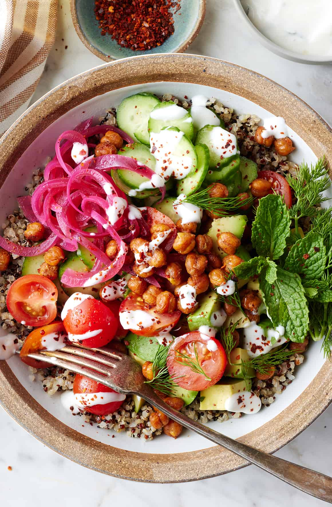

Quinoa Bowl

Description
This delicous and hearty quinoa bowl will provide a pack of vegetable based protein,
enough carbs to keep you full until your next meal, and make you wanting more! And with a variety of grains and vegetables,
delicious tahini sauce, and quick set-up will make you feeling like a professional chef.
Ingredients
- 3 cups cooked quinoa, from 1 cup uncooked;
- 2 Persian cucumbers, thinly sliced;
- 1 cup cherry tomatoes, halved;
- 2 avocados, diced;
- Red Onions;
- Fresh mint and/or parsley leaves;
- Aleppo pepper;
- Yogurt Sauce
Steps
- Cook the quinoa according to this recipe.
- Meanwhile, make the smoky chickpeas: Preheat the oven to 425°F and line a baking sheet with parchment paper.
- Place the chickpeas on the baking sheet. Drizzle with olive oil and sprinkle with the smoked paprika, cumin, salt, and cayenne. Toss to coat and spread evenly on the baking sheet. Roast for 20 to 30 minutes, or until golden brown and crisp.
- Assemble bowls with the quinoa, smoky chickpeas, cucumbers, tomatoes, and avocado. Top with pickled onions, mint, and pinches of Aleppo pepper. Drizzle with garlic yogurt sauce and serve.